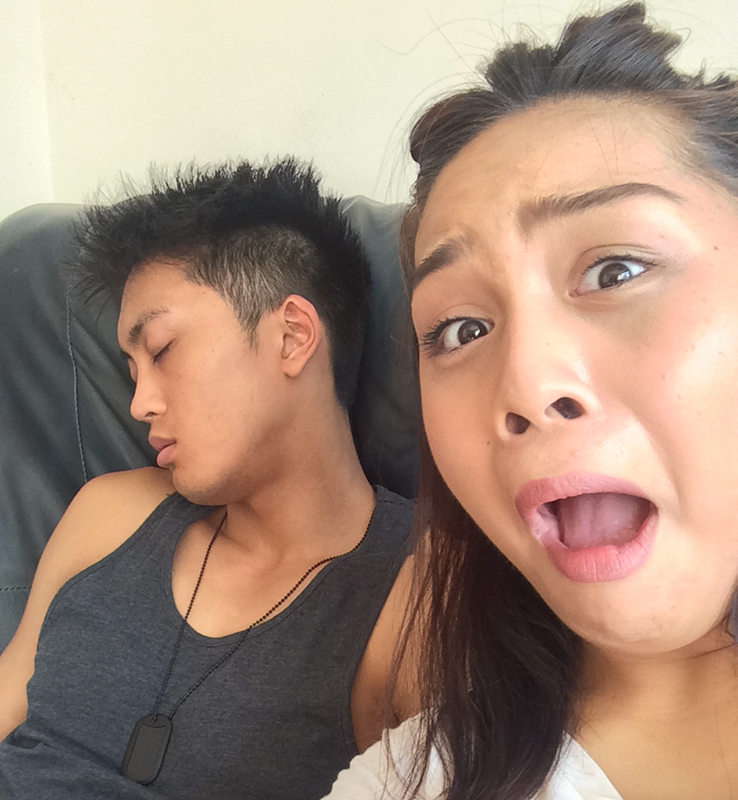

A message from my heart trying to connect with yours
Every guy is different. Some guys write a song, some write a poem, some guys use dance to express themselves to their siginificant other. But this is going to be my method of reaching out to your heart.
This entry is not at all my attempt to win you over. I'd just thought it was my best way to express my feelings and connect with you.
Truthfully, there are moments where I simply type into the text message box to you, and express everything im feeling. I never sent it because I wanted to respect your request of no messaging.
...But I realised that expressing this in person didn't work and so I poured my heart and soul out on this page with what I wrote but never sent on by phone.
The following is what I wish I could of express to you in person..
"I wanted to say 'good morning beautiful' to you but i can't. I want to cuddle you, kiss you, hear your voice again..to feel your heartbeat again..
Facing the reality of knowing that I will never be able to hold you close to me is killing me inside. We were inseparable. We were strong. There was no doubt that we were truly and genuinely in Love.
I'm writing this down and it hurts that I will never be able to hit the 'send' button to express what my mind soul and heart is feeling. Im looking at all my treasured items that remind me of our most happy memories. I wish you could see them.."
"
I miss those late night calls, those goodnights at the end of a long stressful day. I miss the playful bullying that you do to me as your way of showing affection. I remember back in the early days we would play the question game to discover more about each other. It was our way of finding out how we feel about each other.
I remember my first night at your place in Reading and you started singing to me and played guitar (You are so fricken multi talented)..We would just lay down and enjoy each others presence.
I have never been in so much pain in my life. I can't help wondering why did you give up on us?? I'm so confused and lost and sad. I want you to be stronger, I want to be strong. But I need to know if theres a chance for us one day in the future to rekindle and ignite what was a passionate fire... Of happiness, kindness... love..
"
"You motivate me so much and I took you for granted. That is something I tried SO INCREDIBLY HARD not to do when we started our relationship. I went to friends and family how to be the best boyfriend, friend and partner to you. I read articles, videos online courses to educate myself, learn from other people's experience and not make their mistakes.
You don't know this but I make notes on my phone for things I can do to show my affection for you. I've been doing it since before we got together, when you said you would love to learn more about astronomy and I tried finding the best book to get you. The look on your face when you opened the gift.. You gave me the longest hug I've ever recieved from you at the time when we were just friends.
I mental noted to remind myself to get you a good typography book, an Iconic London makeup set, your favourite perfume Valentina. I noted all these stuff , things to do together, waited for the best time to tick them off my list. I guess my point is that I really did try so hard but it ended before you got a chance for me to share this with you.
If only I could of shown you that list earlier... You would of been excited. I had plans to see the Lion King with you, go to a cinema where you can also do a candlelit dinner at the same time, crazy golf park at shoreditch, boat ride on the Pedalos boats in Hyde Park, a jazz bar called Piano bar in soho..I was actually planning to ask you if you wanted a picnic on Primrose hill together this Sunday while the weather is still amazing.
"
"
It just hurts that I only managed to tick one off from that list..
We went to Paris together in February for our 2nd anniversary and you gave me an anniversary card. You said that Paris was just the beginning and we were so excited to travel the world together. I regret it so much that we didn't go Amsterdam 2 weeks ago. We needed that break from work to just be together alone in a strange and foreign land.
"
"You were my rock, my partner in crime, my best friend and my first love. How could all that fit into one incredibly special person? I really hope you and I find independency and not give up on the idea of us. I will never give that up. We were in love, and I could tell from your eyes the day we separated that you were still in love with me too. I knew you didn't want to say 'I love you when' I departed because it would make saying goodbye harder.
My heart that was once filled with Love has mutated into pain. You were the first, and hopefully, last woman I would say 'I love you too'. I've waited so long for a chance to be with you and all of sudden you walked back into my life. Fast forward a few months later we were cuddling on a sofa, my heart pounding so fast I finally got that first kiss from you. I had the girl of my dreams but I lost you."
"
Fuck mann... I really want you to see this. My heart is pouring on this.
You taught me to never give up and fight for what you want. I WILL become a better person, friend, son, older brother and Front end developer. And I WON'T give up on us. The past two years alone I feel that we've grown physically, mentally intellectually and emotionally stronger for the good.
Please dont give up on us...aren't we worth fighting for? Im not asking now.. Start over one day...Go slow.. At each others own pace.. No need to rush anything...Let time heal our wounds.
"
" We are a team Honey.. "